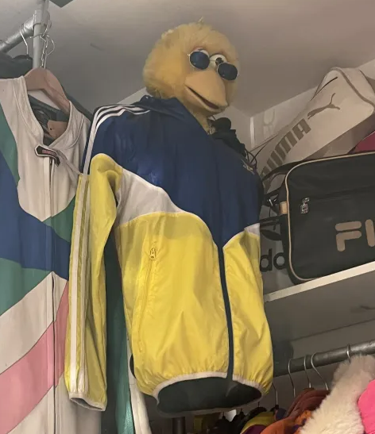

Vintage winkelen biedt een unieke en duurzame manier om je stijl te definiëren. Elk vintage kledingstuk draagt een verhaal met zich mee, een geschiedenis die je kunt omarmen en dragen. Het is een expressie van individualiteit, waarbij je tijdloze mode combineert met milieubewustzijn. Door te kiezen voor vintage draag je bij aan het verminderen van de impact op het milieu, terwijl je tegelijkertijd betaalbare, hoogwaardige en vaak unieke stukken ontdekt die je niet in normale winkels zult vinden. Vintage winkelen is niet alleen een modekeuze; het is een reis door de tijd en een bewuste stap naar een duurzamere levensstijl.
Hier zijn wat redenen om je te overtuigen
Vintage kledingstukken bieden een unieke stijl die vaak niet te vinden is in normale winkels. Het geeft je de mogelijkheid om je te onderscheiden en een persoonlijke, originele outfit te creëren en dragen die bij jou past en jouw persoonlijkheid laat zien.
Door tweedehands kleding te kopen, draag je bij aan duurzaamheid. Het hergebruiken van kleding vermindert de vraag naar nieuwe productie en vermindert daarmee de impact op het milieu.
Veel vintage kledingstukken zijn gemaakt met aandacht voor detail. Ze kunnen vaak van betere materialen zijn, waardoor ze duurzamer zijn dan sommige moderne kledingstukken. Vaak gaan ze ook langer mee dan fast fashion uit normale winkels
Veel vintage stukken hebben een tijdloze aantrekkingskracht en kunnen gemakkelijk worden geïntegreerd in moderne outfits. Het dragen van vintage geeft je de mogelijkheid om een mix van stijlen te creëren.
Door vintage te winkelen verminder je de behoefte aan nieuwe productie, wat de ecologische voetafdruk verkleint, zo steun je geen winkels die aan fast fashion doen en koop je kleding die al gemaakt is ipv kleding die in grote massa word geproduceerd om vervolgens te eindigen in het afval.
Vintage kleding biedt een brede selectie aan stijlen en periodes, waardoor je de kans krijgt om creatief te zijn en je eigen stijl en persoonlijkheid uit te drukken.